Let us keep things simple and use a basic client and server model for communication.
Intuitively, you can implement a rate limiter at either the client or server-side.
•Client-side implementation. Generally speaking, client is an unreliable place to enforce rate limiting because client requests can easily be forged by malicious actors. Moreover, we might not have control over the client implementation.
•Server-side implementation. Figure 4-1 shows a rate limiter that is placed on the server-side.
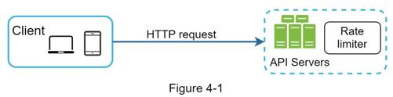
Besides the client and server-side implementations, there is an alternative way. Instead of putting a rate limiter at the API servers, we create a rate limiter middleware, which throttles requests to your APIs as shown in Figure 4-2.
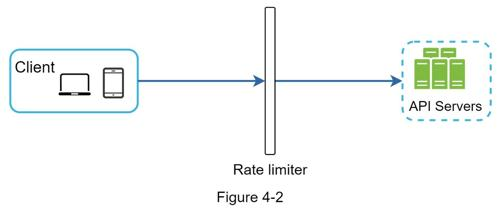
Let us use an example in Figure 4-3 to illustrate how rate limiting works in this design. Assume our API allows 2 requests per second, and a client sends 3 requests to the server within a second. The first two requests are routed to API servers. However, the rate limiter middleware throttles the third request and returns a HTTP status code 429. The HTTP 429 response status code indicates a user has sent too many requests.
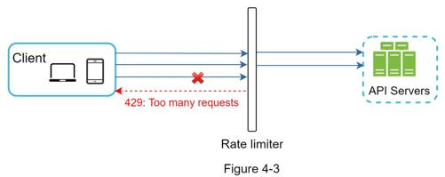
Cloud microservices [4] have become widely popular and rate limiting is usually implemented within a component called API gateway. API gateway is a fully managed service that supports rate limiting, SSL termination, authentication, IP whitelisting, servicing static content, etc. For now, we only need to know that the API gateway is a middleware that supports rate limiting.
While designing a rate limiter, an important question to ask ourselves is: where should the rater limiter be implemented, on the server-side or in a gateway? There is no absolute answer. It depends on your company’s current technology stack, engineering resources, priorities, goals, etc. Here are a few general guidelines:
•Evaluate your current technology stack, such as programming language, cache service, etc. Make sure your current programming language is efficient to implement rate limiting on the server-side.
•Identify the rate limiting algorithm that fits your business needs. When you implement everything on the server-side, you have full control of the algorithm. However, your choice might be limited if you use a third-party gateway.
•If you have already used microservice architecture and included an API gateway in the design to perform authentication, IP whitelisting, etc., you may add a rate limiter to the API gateway.
•Building your own rate limiting service takes time. If you do not have enough engineering resources to implement a rate limiter, a commercial API gateway is a better option.
Rate limiting can be implemented using different algorithms, and each of them has distinct pros and cons. Even though this chapter does not focus on algorithms, understanding them at high-level helps to choose the right algorithm or combination of algorithms to fit our use cases. Here is a list of popular algorithms:
•Token bucket
•Leaking bucket
•Fixed window counter
•Sliding window log
The token bucket algorithm is widely used for rate limiting. It is simple, well understood and commonly used by internet companies. Both Amazon [5] and Stripe [6] use this algorithm to throttle their API requests.
The token bucket algorithm work as follows:
•A token bucket is a container that has pre-defined capacity. Tokens are put in the bucket at preset rates periodically. Once the bucket is full, no more tokens are added. As shown in Figure 4-4, the token bucket capacity is 4. The refiller puts 2 tokens into the bucket every second. Once the bucket is full, extra tokens will overflow.
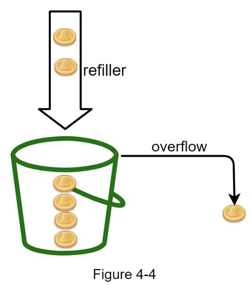
•Each request consumes one token. When a request arrives, we check if there are enough tokens in the bucket. Figure 4-5 explains how it works.
•If there are enough tokens, we take one token out for each request, and the request goes through.
•If there are not enough tokens, the request is dropped.
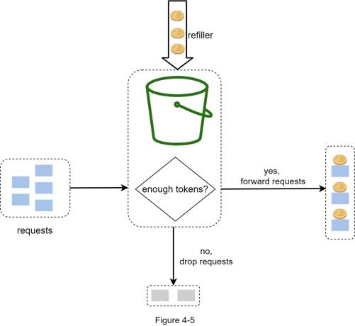
Figure 4-6 illustrates how token consumption, refill, and rate limiting logic work. In this example, the token bucket size is 4, and the refill rate is 4 per 1 minute.
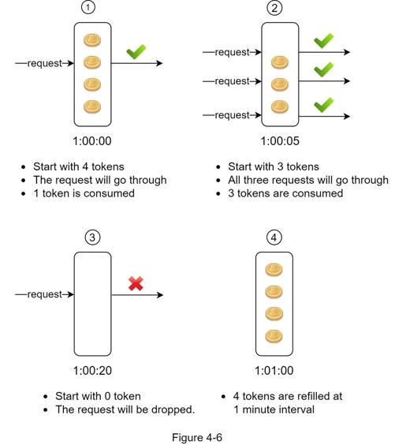
The token bucket algorithm takes two parameters:
•Bucket size: the maximum number of tokens allowed in the bucket
•Refill rate: number of tokens put into the bucket every second
How many buckets do we need? This varies, and it depends on the rate-limiting rules. Here are a few examples.
•It is usually necessary to have different buckets for different API endpoints. For instance, if a user is allowed to make 1 post per second, add 150 friends per day, and like 5 posts per second, 3 buckets are required for each user.
•If we need to throttle requests based on IP addresses, each IP address requires a bucket.
•If the system allows a maximum of 10,000 requests per second, it makes sense to have a global bucket shared by all requests.
Pros:
•The algorithm is easy to implement.
•Memory efficient.
•Token bucket allows a burst of traffic for short periods. A request can go through as long as there are tokens left.
Cons:
•Two parameters in the algorithm are bucket size and token refill rate. However, it might be challenging to tune them properly.
The leaking bucket algorithm is similar to the token bucket except that requests are processed at a fixed rate. It is usually implemented with a first-in-first-out (FIFO) queue. The algorithm works as follows:
•When a request arrives, the system checks if the queue is full. If it is not full, the request is added to the queue.
•Otherwise, the request is dropped.
•Requests are pulled from the queue and processed at regular intervals.
Figure 4-7 explains how the algorithm works.
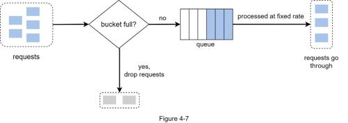
Leaking bucket algorithm takes the following two parameters:
•Bucket size: it is equal to the queue size. The queue holds the requests to be processed at a fixed rate.
•Outflow rate: it defines how many requests can be processed at a fixed rate, usually in seconds.
Shopify, an ecommerce company, uses leaky buckets for rate-limiting [7].
Pros:
•Memory efficient given the limited queue size.
•Requests are processed at a fixed rate therefore it is suitable for use cases that a stable outflow rate is needed.
Cons:
•A burst of traffic fills up the queue with old requests, and if they are not processed in time, recent requests will be rate limited.
•There are two parameters in the algorithm. It might not be easy to tune them properly.
Fixed window counter algorithm works as follows:
•The algorithm divides the timeline into fix-sized time windows and assign a counter for each window.
•Each request increments the counter by one.
•Once the counter reaches the pre-defined threshold, new requests are dropped until a new time window starts.
Let us use a concrete example to see how it works. In Figure 4-8, the time unit is 1 second and the system allows a maximum of 3 requests per second. In each second window, if more than 3 requests are received, extra requests are dropped as shown in Figure 4-8.
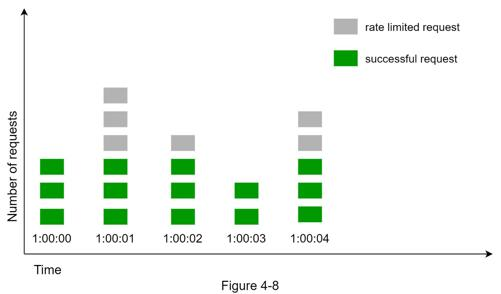
A major problem with this algorithm is that a burst of traffic at the edges of time windows could cause more requests than allowed quota to go through. Consider the following case:
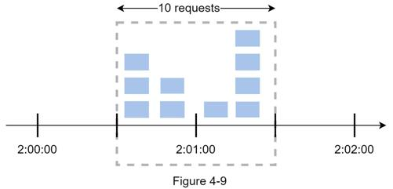
In Figure 4-9, the system allows a maximum of 5 requests per minute, and the available quota resets at the human-friendly round minute. As seen, there are five requests between 2:00:00 and 2:01:00 and five more requests between 2:01:00 and 2:02:00. For the one-minute window between 2:00:30 and 2:01:30, 10 requests go through. That is twice as many as allowed requests.
Pros:
•Memory efficient.
•Easy to understand.
•Resetting available quota at the end of a unit time window fits certain use cases.
Cons:
•Spike in traffic at the edges of a window could cause more requests than the allowed quota to go through.
As discussed previously, the fixed window counter algorithm has a major issue: it allows more requests to go through at the edges of a window. The sliding window log algorithm fixes the issue. It works as follows:
•The algorithm keeps track of request timestamps. Timestamp data is usually kept in cache, such as sorted sets of Redis [8].
•When a new request comes in, remove all the outdated timestamps. Outdated timestamps are defined as those older than the start of the current time window.
•Add timestamp of the new request to the log.
•If the log size is the same or lower than the allowed count, a request is accepted. Otherwise, it is rejected.
We explain the algorithm with an example as revealed in Figure 4-10.
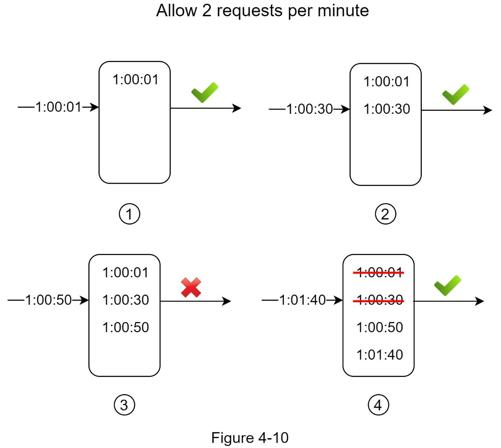
In this example, the rate limiter allows 2 requests per minute. Usually, Linux timestamps are stored in the log. However, human-readable representation of time is used in our example for better readability.
•The log is empty when a new request arrives at 1:00:01. Thus, the request is allowed.
•A new request arrives at 1:00:30, the timestamp 1:00:30 is inserted into the log. After the insertion, the log size is 2, not larger than the allowed count. Thus, the request is allowed.
•A new request arrives at 1:00:50, and the timestamp is inserted into the log. After the insertion, the log size is 3, larger than the allowed size 2. Therefore, this request is rejected even though the timestamp remains in the log.
•A new request arrives at 1:01:40. Requests in the range [1:00:40,1:01:40) are within the latest time frame, but requests sent before 1:00:40 are outdated. Two outdated timestamps, 1:00:01 and 1:00:30, are removed from the log. After the remove operation, the log size becomes 2; therefore, the request is accepted.
Pros:
•Rate limiting implemented by this algorithm is very accurate. In any rolling window, requests will not exceed the rate limit.
•The algorithm consumes a lot of memory because even if a request is rejected, its timestamp might still be stored in memory.
The sliding window counter algorithm is a hybrid approach that combines the fixed window counter and sliding window log. The algorithm can be implemented by two different approaches. We will explain one implementation in this section and provide reference for the other implementation at the end of the section. Figure 4-11 illustrates how this algorithm works.
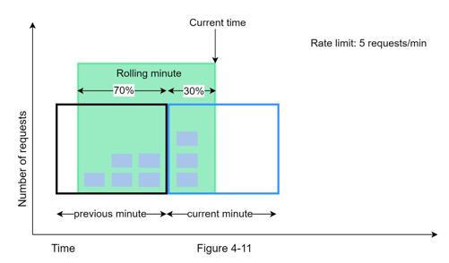
Assume the rate limiter allows a maximum of 7 requests per minute, and there are 5 requests in the previous minute and 3 in the current minute. For a new request that arrives at a 30% position in the current minute, the number of requests in the rolling window is calculated using the following formula:
•Requests in current window + requests in the previous window * overlap percentage of the rolling window and previous window
•Using this formula, we get 3 + 5 * 0.7% = 6.5 request. Depending on the use case, the number can either be rounded up or down. In our example, it is rounded down to 6.
Since the rate limiter allows a maximum of 7 requests per minute, the current request can go through. However, the limit will be reached after receiving one more request.
Due to the space limitation, we will not discuss the other implementation here. Interested readers should refer to the reference material [9]. This algorithm is not perfect. It has pros and cons.
Pros
•It smooths out spikes in traffic because the rate is based on the average rate of the previous window.
•Memory efficient.
Cons
•It only works for not-so-strict look back window. It is an approximation of the actual rate because it assumes requests in the previous window are evenly distributed. However, this problem may not be as bad as it seems. According to experiments done by Cloudflare [10], only 0.003% of requests are wrongly allowed or rate limited among 400 million requests.
The basic idea of rate limiting algorithms is simple. At the high-level, we need a counter to keep track of how many requests are sent from the same user, IP address, etc. If the counter is larger than the limit, the request is disallowed.
Where shall we store counters? Using the database is not a good idea due to slowness of disk access. In-memory cache is chosen because it is fast and supports time-based expiration strategy. For instance, Redis [11] is a popular option to implement rate limiting. It is an in-memory store that offers two commands: INCR and EXPIRE.
•INCR: It increases the stored counter by 1.
•EXPIRE: It sets a timeout for the counter. If the timeout expires, the counter is automatically deleted.
Figure 4-12 shows the high-level architecture for rate limiting, and this works as follows:
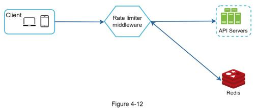
•The client sends a request to rate limiting middleware.
•Rate limiting middleware fetches the counter from the corresponding bucket in Redis and checks if the limit is reached or not.
•If the limit is reached, the request is rejected.
•If the limit is not reached, the request is sent to API servers. Meanwhile, the system increments the counter and saves it back to Redis.